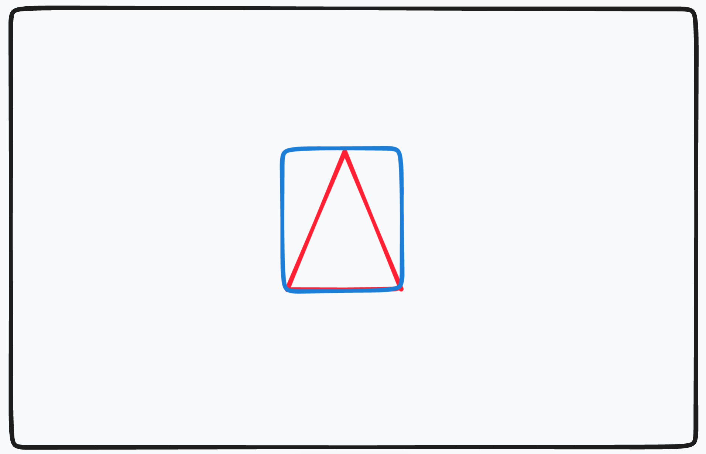
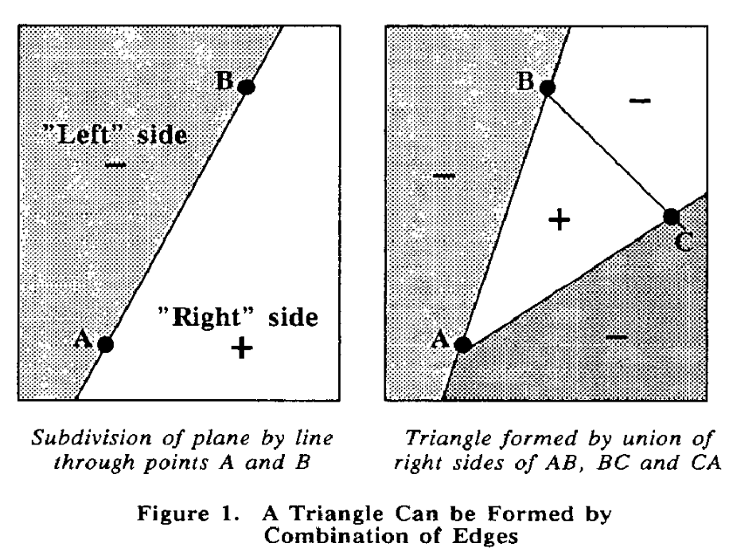

Lecture 04: Triangle rasterization
Computer graphics in Game development
Ivan Belyavtsev
22.01.2022
Rendering pipeline

Rasterization
After vertex shader stage we have an NDC coordinates of each vertex of the triangle.
Next steps:
- Convert NDC to screen space coordinates
- Find the triangle bounding rectangle
- Clip the triangle to screen space size
- For each pixel inside the bounding rectangle decide which pixel inside the triangle or not
- For each pixel inside the triangle compute a color with a pixel shader [1]
Convert NDC to screen space coordinates
Could be done in homogeneous coordinates or cartesian
\[M_{ss} = \left[\begin{array}{cccc} width & 0 & 0 & 0 \\ 0 & - height & 0 & 0 \\ 0 & 0 & 1 & 0 \\ x & height + y & 0 & 1 \end{array}\right]\]
where \(x\) and \(y\) are offsets from the screen space \((0, 0)\) [1]
Bounding rectangle

How to find whether the pixel is inside the triangle - Edge function
Let’s take two points \((X, Y)\) and \((X+dx, Y+dy)\) on an edge
Then, define an edge function:
\[E(x, y) = (x - X)dy - (y - Y)dx\]
[2]
Edge function values
If \(E(x, y)>0\) then \((x, y)\) on the “right” side
If \(E(x, y)<0\) then \((x, y)\) on the “left” side
If \(E(x, y)=0\) then \((x, y)\) on the edge
[2]
Edge function view
 [2]
Clockwise vs counter-clockwise
 [3]
[3]
Another meaning of the edge function
Lets compare \[E(x, y) = (x - X)dy - (y - Y)dx\]
and \[(u_1, u_2, 0) \times (v_1, v_2, 0) = (0, 0, u_1v_1-u_2v_1)\]
The edge function value is a twice area of the triangle
Barycentric coordinates
Let \(u = \frac{S_{CAP}}{S_{ABC}}\), \(v = \frac{S_{BCP}}{S_{ABC}}\), \(w = \frac{S_{ABP}}{S_{ABC}}\)
Therefore, \(u+v+w=1\), and \(P=uA+vB+wC\). The barycentric could be used for attribute interpolation [4]

Pixel shader
Input: interpolated vertex attributes
Output: result pixel color
The pixel shader should be provided by graphics programmer [5]
Lab: Triangle rasterization
- Implement
cg::renderer::rasterizer::edge_functionmethod - Implement
pixel_shaderlambda for the instance ofcg::renderer::rasterizer - Add
RasterizationandPixel shaderstages todrawmethod ofcg::renderer::rasterizer - Make sure that you are getting correct image as a result